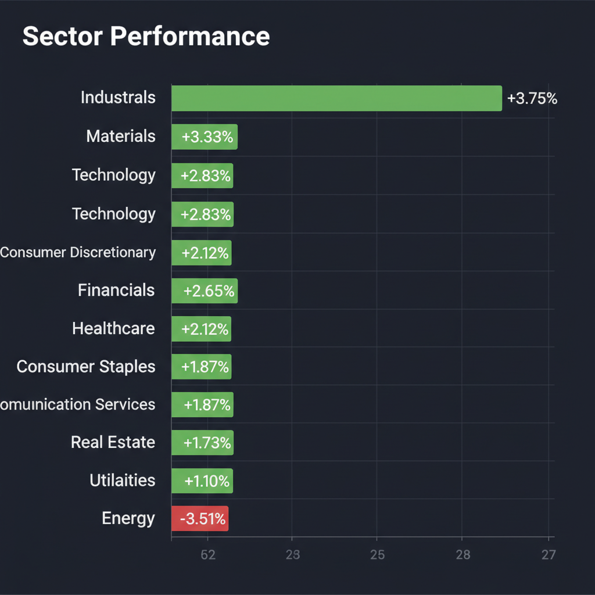
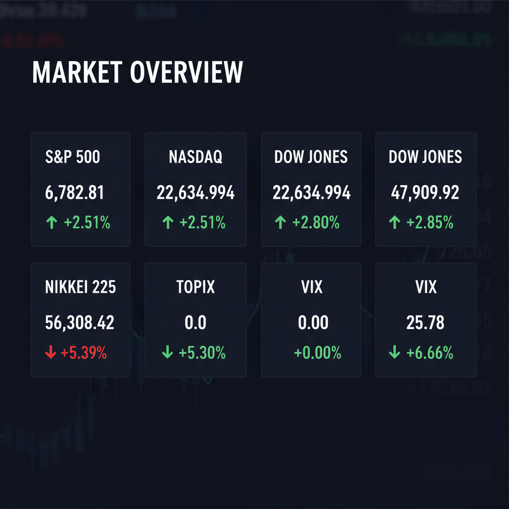

Daily Investment Report - 2026-04-09
Generated: 2026/4/9 8:20:38


本日の投資チームミーティングにおける各エージェントの分析を統合し、最終的な投資レポートを作成いたしました。現在の市場に潜むリスクを直視しつつ、大きな成長余地を残す中小型株への戦略的なアプローチを提示しています。
1. エグゼクティブサマリー
- 米イランの停戦報道で日米の主要指数は急反発しましたが、同時にVIX（恐怖指数）が急騰するという異常なダイバージェンス（逆行現象）が発生しており、機関投資家は急落ヘッジを強めています。
- 消費者需要の低迷（コンステレーション・ブランズの長期ガイダンス撤回等）や、50%関税の脅威、FRBトップ人事の停滞など、実体経済とマクロ環境の悪化シグナルが多数点灯しています。
- 現在の株高は一時的なショートカバー（空売りの買い戻し）の可能性が高いため、指数全体への追随は避け、現金比率を高めつつ「AIマネタイズ」や「資源循環」をテーマとした割安な中小型株へ資金を選別・シフトすべき局面です。
2. 注目銘柄リスト
強気（買い推奨）
- メタリアル（6182） [時価総額：約100億円規模]: AI事業の好調により業績を上方修正しており、単なる期待先行からB2Bでのマネタイズ（実益化）フェーズへ移行したことが確認できる、爆発的な成長期待を持つAI銘柄です。
- エンビプロ・ホールディングス（5698） [時価総額：約100億〜200億円規模]: PBR1倍割れの割安水準に放置されながら、脱炭素・サーキュラーエコノミーの構造的需要を取り込んでおり、強固な財務基盤と安定したキャッシュフローが下値を支える安全なテンバガー候補です。
- Brag House Holdings, Inc.（TBH） [時価総額：超小型・ペニーストック級]: Dogecoinエコシステムとの合併が承認され、デジタルインフラと決済で2.3兆ドルのスポーツ経済圏を狙うハイリスク・ハイリターンの破壊的イノベーション銘柄です。
中立（様子見）
- Catalyst Bancorp（CLST）など米国中小型地銀 [時価総額：小〜中規模]: 預金確保と規模拡大を狙うM&Aのターゲットとしてのバリュープレミアムは魅力的ですが、金利高止まりリスクがあるためエントリータイミングは慎重に見極める必要があります。
- エネルギーセクターETF（XLE） [時価総額：セクター全体]: 地政学リスク再燃や関税ショック時の強力なヘッジ対象となりますが、直近の下落モメンタムが極めて強いため、逆張りではなくテクニカルな底打ちシグナルを待つべきです。
弱気（警戒）
- Constellation Brands（STZ） [時価総額：大型・消費財の先行指標として]: 消費の冷え込みを理由に2028年の長期業績ガイダンスを撤回しており、見た目のPER以上に割高となる「バリュートラップ」の危険性が高いため投資は回避推奨です。
- 住友ファーマ（4506） [時価総額：約1,500億〜2,000億円水準]: 現在の時価総額に対して最大1,164億円という極めて大規模な公募増資を発表し、既存株主への致命的な株式希薄化を引き起こすため厳重警戒が必要です。
3. セクター推奨ランキング
- 1位：素材・資本財セクター：トランプ関税リスクによるグローバルサプライチェーンの再編を背景に、国内回帰（オンショアリング）や資源リサイクル（サーキュラーエコノミー）関連企業に強い資金流入が見込めるため。
- 2位：AI・テクノロジーセクター（中小型SaaS等）：マクロ経済の減速懸念の中でも景気動向に左右されにくく、AIの実用化によって独自の売上・利益成長ストーリーを描けるため。
- 3位：ヘルスケアセクター：消費需要の冷え込みが顕在化する中、景気変動の影響を受けにくく、ディフェンシブ資産としてポートフォリオの安定化に寄与するため。
- 4位：エネルギーセクター：停戦報道で売り叩かれていますが、中東停戦の脆弱性やホルムズ海峡リスクを考慮すると、最悪のシナリオに備えたショックアブソーバー（保険）として底値買いを監視すべきセクターであるため。
- 5位：一般消費財・生活必需品セクター：長引くインフレによる購買力低下が明確になっており、価格転嫁の限界から企業のトップライン成長鈍化と利益率の圧迫が避けられないため（最下位・回避推奨）。
4. 今週の注目イベント
- 4月9日：日本の国内主力小売業（イオン、セブン＆アイ・ホールディングス、ファーストリテイリングなど計38社）の決算発表
- 今週中：米国上院でのトランプ大統領のイラン戦争権限を制限する決議案の採決
- 随時：次期FRB議長（ケビン・ウォーシュ氏）の人事停滞およびパウエル議長の法的手続きに関する動向
- 随時：中東情勢のヘッドライン（イスラエルによるレバノン攻撃の推移、およびイランのホルムズ海峡を巡る動向）
5. リスク要因
- 指数の急騰とVIX（恐怖指数）の上昇が同時に起こる異常なダイバージェンスが示唆する、ブルトラップ（ダマシ）およびフラッシュ・クラッシュ（流動性枯渇による急落）リスク。
- トランプ大統領の「50%関税」発動の威嚇による、グローバルサプライチェーンの崩壊とコストプッシュ・インフレの再燃リスク。
- コンステレーション・ブランズのガイダンス撤回が明確に示した、実体経済の需要低迷と消費者の購買力限界（景気後退の入り口）。
- レバノンでの死者激増が示す米イラン停戦合意の脆弱性と、エネルギー価格の高騰（スタグフレーション）リスク。
- FRBトップ人事の宙吊りによる金融政策の機動力低下と、高金利の長期化に伴う中小型グロース株の資金調達コスト急騰リスク。
6. アクションアイテム
- 株式のロングポジション（特に大型グロースや一般消費財）は一部利益確定または損切りを行い、全体のエクスポージャー（投資比率）を通常の半分以下に縮小する。
- 現金（キャッシュ）比率を最低でも30%〜50%に引き上げ、ボラティリティ拡大によるパニック売りが発生した際の「買い出動資金」を温存する。
- 新規のエントリーは推奨された「AI」や「環境」の中小型株に限定し、ギャップアップの窓下限や直近安値の少し下に厳格なストップロス（損切りライン）を必ず設定する。
- テールリスクへの防衛策として、VIXのコールオプションやS&P500のアウト・オブ・ザ・マネーのプットオプション購入、またはエネルギーセクター（XLE）の底打ち監視を行う。
- 本日発表される日本の小売主力株（イオン等）の決算前後における価格の乱高下（ネガティブサプライズ）に巻き込まれないよう、関連セクターへの新規資金投入は控える。